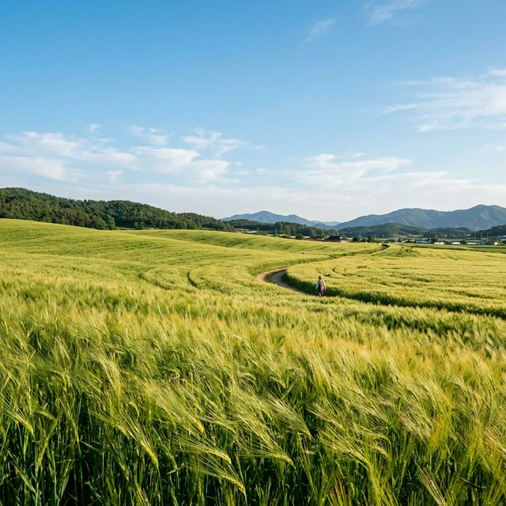
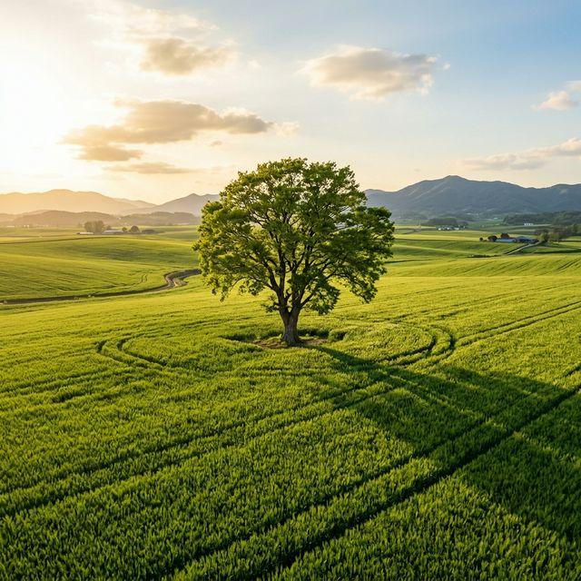
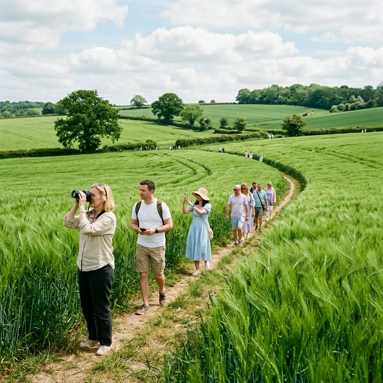

올해로 제23회를 맞이하는 고창 청보리밭 축제는 2026년 4월 18일부터 5월 10일까지 고창군 공음면 학원농장 일대에서 개최됩니다. 2026년의 축제 슬로건은 '초록
불결, 치유의 고창'으로 정해졌습니다. 끝없이 펼쳐진 보리밭 사이를 걸으며 현대인의 지친 심신을 달래고, 자연이 주는 순수한 에너지를 만끽할 수 있는 다채로운 프로그램들이 준비되어 있죠.
축제 전인 4월 14일 현재, 보리들은 이미 성인 무릎 높이까지 자라나 완연한 연둣빛을 띠고 있습니다. 보리밭 사이사이에 심어진 유채꽃들도 노란 얼굴을 내밀기 시작해, 초록과 노랑이 어우러진 환상적인
색채 대비를 보여주고 있습니다. 이번 주말부터는 본격적인 상행춘객들이 몰려들 것으로 예상되니, 조금 더 여유로운 관람을 원하신다면 평일 오전 시간대를 공략하시는 것이 최고의 전략입니다.

고창의 청보리밭이 지금처럼 전국적인 명성을 얻게 된 데에는 학원농장의 노력이 컸습니다. 1960년대 초반, 황무지였던 이곳을 개척하여 대규모 농장으로 일구면서 시작된
역사는 이제 한국을 대표하는 경관 농업의 성공 사례로 꼽힙니다. 보리는 겨울을 나고 봄에 싹을 틔우는 강인한 생명력의 상징이죠. 이러한 보리의 이미지는 고창의 소박하면서도 단단한 지역 정서와도 잘
맞닿아 있습니다.
농장주와 주민들이 합심하여 보리가 익어가는 과정 자체가 하나의 축제가 되도록 가꾸어 온 덕분에, 이제 고창 여행에서 청보리밭을 빼놓는 것은 불가능해졌습니다. 2026년에는 농업 유산으로서의 가치를
인정받아 더욱 체계적인 보존 및 체험 시설이 확충되었습니다. 단순히 눈으로 보는 것에 그치지 않고, 땅의 숨결을 느끼고 농민들의 땀방울을 이해하는 교육적인 장소로서의 역할도 톡톡히 해내고 있습니다.
이곳이 세계적으로 유명해진 결정적인 계기는 역시 드라마 '도깨비'의 촬영지였기 때문입니다. 공유와 김고은이 만났던 그 비밀스러운 보리밭과 하얀 꽃이 핀 메밀밭 신은 많은
시청자의 가슴 속에 깊이 각인되었죠. 청보리 시즌에도 그 신비로운 분위기는 고스란히 남아 있습니다. 숲길 사이로 이어진 오두막 건물을 배경으로 사진을 찍으면 마치 드라마 속 주인공이 된 듯한 기분을
느낄 수 있습니다.
드라마 촬영지임을 알리는 포토존 앞에는 늘 줄이 늘어서지만, 조금만 시선을 돌려 보리밭 깊숙이 들어가 보면 자신만의 숨은 명당을 찾을 수 있습니다. 2026년에는 증강현실(AR) 기술을 활용해 드라마
속 명장면을 스마트폰으로 재현해 볼 수 있는 서비스도 제공됩니다. 카메라 렌즈를 통해 드라마 속 소환 도구를 찾아보는 재미는 MZ세대 여행자들에게 큰 즐거움을 선사할 것입니다.

고창 청보리밭 출사의 백미는 광활한 초록 평원 위에 홀로 서 있는 '왕따나무'입니다. 이 나무는 계절마다 옷을 갈아입으며 보리밭의 중심을 잡아주는 훌륭한 피사체가
되어주죠. 특히 해가 질 무렵, 붉게 물든 노을이 보리밭 끝자락에 걸리고 나무 한 그루가 실루엣으로 남는 풍경은 전문 사진가들도 최고의 컷으로 꼽는 장면입니다.
나무 아래 벤치에 앉아 잠시 휴식을 취하며 바람에 스치는 보리 냄새를 맡아보세요. 도시의 소음 대신 보리 물결 소리만이 귓가를 맴도는 평화로운 순간입니다. 2026년에는
나무 주변에 야자 매트 산책로를 보강하여 흙먼지 없이 깔끔하게 접근할 수 있도록 배려했습니다. 이곳에서 남기는 한 장의 사진은 여러분의 2026년 봄을 기록하는 가장 아름다운 증거가 될 것입니다.
청보리밭을 제대로 즐기기 위해 2026년에는 3가지 맞춤형 산책 코스를 제안합니다. 첫 번째는 '감성 충전 길'로, 드넓은 벌판을 가로질러 주요 포토존과 촬영지를 도는
정석 코스입니다. 두 번째는 '숲속 힐링 길'로 보리밭과 인접한 대나무 숲길을 걸으며 시원한 피톤치드를 즐기는 코스죠. 마지막 세 번째는 '농촌 체험 길'로 보리 탈곡 체험이나 전통 놀이를 즐길 수
있는 가족형 코스입니다.
각 코스마다 설치된 스탬프를 모두 찍으면 지역 농산물을 받을 수 있는 이벤트도 진행됩니다. 보리밭은 생각보다 넓으므로 한꺼번에 다 돌려고 하기보다는, 자신의 컨디션에 맞춰 한 구역을 깊이 있게 산책하는
것이 좋습니다. 햇빛을 가릴 양산이나 챙이 넓은 모자는 필수이며, 보리밭의 초록색과 대비되는 노란색이나 흰색 옷을 입으면 더욱 화사한 사진을 남길 수 있습니다.

고창 여행에서 먹거리를 빼놓으면 섭섭하죠. 축제장에 마련된 식당가에서는 갓 수확한 보리로 지은 보리비빔밥을 맛볼 수 있습니다. 톡톡 터지는 보리알의 식감과 고소한 들기름,
그리고 제철 나물들이 어우러진 비빔밥은 건강과 맛을 동시에 잡은 최고의 한 끼입니다. 보리 개떡이나 보리 강정 같은 간식거리들도 투박하지만 깊은 맛을 자랑합니다.
조금 더 격식 있는 식사를 원하신다면 인근 선운사 쪽으로 이동해 풍천장어를 즐겨보세요. 고창의 갯벌과 강이 만나는 곳에서 자란 풍천장어는 그 쫀득한 육질과 깊은 풍미로
정평이 나 있습니다. 복분자주 한 잔까지 곁들인다면 봄날의 기력을 보충하기에 이보다 좋은 보양식은 없을 것입니다. 보리의 소박함과 장어의 화려함이 공존하는 고창의 미식 세계는 여행의 질을 한 차원
높여줄 것입니다.
축제 기간 중 학원농장 일대는 늘 교통 혼잡이 예상됩니다. 효율적인 주차를 위해서는 농장 정문 쪽보다는 조금 앞쪽에 마련된 대형 임시 주차장을 이용하시는 것이 정신 건강에
이롭습니다. 2026년에는 무료 셔틀버스가 10분 간격으로 운행되므로, 먼 거리에 주차하더라도 행사장까지 편안하게 이동할 수 있습니다.
내비게이션에 '학원농장'을 검색하면 여러 경로가 나오는데, 서해안고속도로 고창 IC보다는 정읍 IC나 선운사 IC를 이용하는 편이 상대적으로 덜 밀립니다. 또한,
대중교통을 이용할 경우 고창 터미널에서 축제 전용 순환 버스를 탑승하시면 약 20분 만에 도착할 수 있습니다. 카카오톡 채널 '고창축제알리미'를 친구 추가하면 실시간 교통
혼잡도와 빈 주차장 정보를 실시간으로 받아볼 수 있어 매우 유용합니다.
고창 청보리밭은 아이들에게 거대한 야외 놀이터와 같습니다. 흙을 밟고 보리 이삭을 만져보며 자연과 교감하는 시간은 도심의 키즈 카페에서는 경험할 수 없는 가치를 지니죠.
2026년 축제에서는 어린이를 위한 '꼬마 농부 교실'이 열립니다. 직접 보리를 심어보거나 새끼를 꼬아 보는 체험은 아이들에게 잊지 못할 추억과 호기심을 심어줄 것입니다.
또한, 보리밭 한쪽에는 양과 염소들이 뛰어노는 작은 목장도 운영됩니다. 동물들에게 보리 짚을 주며 교감하는 시간은 아이들의 정서 발달에도 큰 도움이 됩니다. 유모차 이동이
가능한 데크 로드가 잘 정비되어 있으니 영유아를 동반한 부모님들도 걱정 없이 방문하셔도 좋습니다. 다만, 아이들이 보리밭 안으로 함부로 들어가지 않도록 부모님의 세심한 주의가 필요합니다.
보리밭 구경을 마쳤다면 차로 20분 거리에 있는 선운사를 방문해 보세요. '선운사 동백꽃'은 이미 노래 가사에 등장할 만큼 유명하며, 4월 중순까지는 마지막 동백의 붉은
자태를 감상할 수 있습니다. 고요한 산사의 분위기와 계곡물 소리는 보리밭의 활기와는 또 다른 평온함을 선사하죠.
또한, 고창읍성(모양성) 산책도 강력 추천합니다. 성곽을 따라 한 바퀴 돌면 고창 시내가 한눈에 들어오는데, 특히 성곽 주변의 철쭉들이 만개하는 시기라 보리밭 축제와
연계하기에 최적입니다. 성곽 길을 걷다 보면 '머리에 돌을 이고 한 바퀴 돌면 다리 병이 낫고, 두 바퀴 돌면 무병장수한다'는 전설도 전해지니 재미 삼아 실천해 보시는 것도 좋겠습니다.
2026년의 봄은 고창의 청보리밭에서 더욱 선명해집니다. 바람이 불 때마다 솨아솨아 소리를 내며 춤추는 보리 물결을 보고 있노라면, 가슴 속 깊은 곳까지 맑아지는 기분이
듭니다. 콘크리트 빌딩 숲에서 벗어나 오직 흙과 풀, 그리고 바람만이 존재하는 이 공간은 우리에게 진정한 의미의 휴식이 무엇인지 말해주는 듯합니다.
이번 주말, 고창으로 향하는 길은 단순한 여행이 아닌 대지의 숨결을 찾아가는 여정이 될 것입니다. 청보리가 선사하는 초록의 위로를 듬뿍 담아 돌아오시는 길은 무척이나
가벼울 것입니다. 4월의 짧은 찬란함을 절대 놓치지 마세요. 여러분의 일상에 싱그러운 초록 에너지가 가득하기를 기원합니다. 고창에서 만나요!